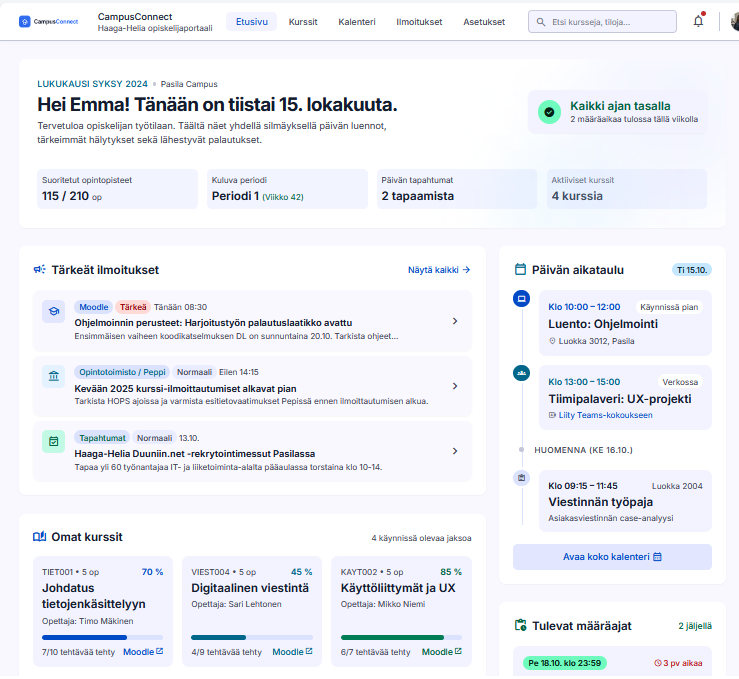

Opiskelijan tieto on usein monessa paikassa
Opiskelun aikana tärkeää tietoa tulee monesta eri paikasta. Sähköpostissa, Moodlessa, Teamsissa ja muissa palveluissa voi olla paljon erilaisia ilmoituksia ja tehtäviä.
CampusConnectin tarkoituksena on helpottaa tätä ongelmaa kokoamalla opiskelijan tärkeimmät tiedot yhteen paikkaan.
Yksi näkymä opiskelijan tärkeimpiin asioihin
CampusConnect Dashboard näyttää opiskelijalle esimerkiksi:
- tärkeät ilmoitukset
- tulevat määräajat
- kurssit
- tapahtumat
- kalenterin tulevat merkinnät
"Haluan löytää opiskeluun liittyvän tiedon yhdestä paikasta."
Selkeämpi opiskelupäivä
Palvelun tavoitteena on vähentää aikaa, joka kuluu tiedon etsimiseen. Opiskelija voi avata CampusConnectin ja nähdä nopeasti, mitä hänen pitää tehdä seuraavaksi.
CampusConnect on suunniteltu erityisesti uusia opiskelijoita ajatellen, mutta siitä voi olla hyötyä kaikille opiskelijoille.